Префектура Киото · Гион · где остановиться
THE SHINMONZEN: девять номеров Тадао Андо на улице антикваров в Гионе
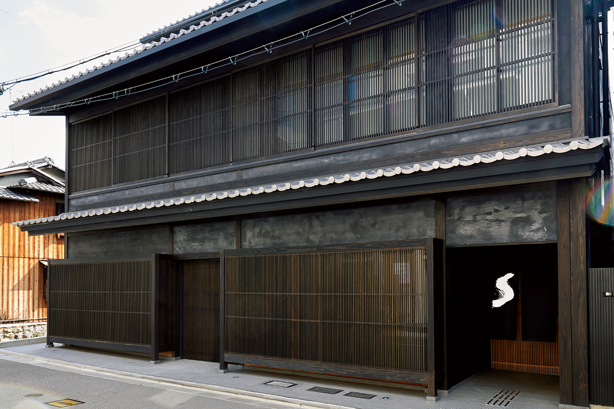
На улице Симмондзэн к северу от Гиона много лет держат лавки антиквары и галереи. Здесь в 2022 году открылся THE SHINMONZEN, отель всего на девять номеров: снаружи старый киотский дом, внутри простые и очень дорогие интерьеры Тадао Андо.
Здание
Дом за чёрной занавесью
Путешествие начинается ещё на вокзале Киото: сотрудник отеля встречает гостей прямо на платформе и провожает к машине. Сцена напоминает европейский вокзал и сразу задаёт настроение поездки.
Тёмный дом почти не отличается от соседей по улице. Понять, что это отель, можно только по чёрной занавеси норэн: когда её колышет ветер, на ней проступает белая буква «S». Но стоит пройти под занавесью, как всё меняется. Вглубь ведёт длинный минималистичный коридор: одна его стена собрана из резной деревянной решётки, другая сделана из голого бетона. Вход совсем простой, но красивый, и с первых шагов понимаешь, что попал в мир Тадао Андо.
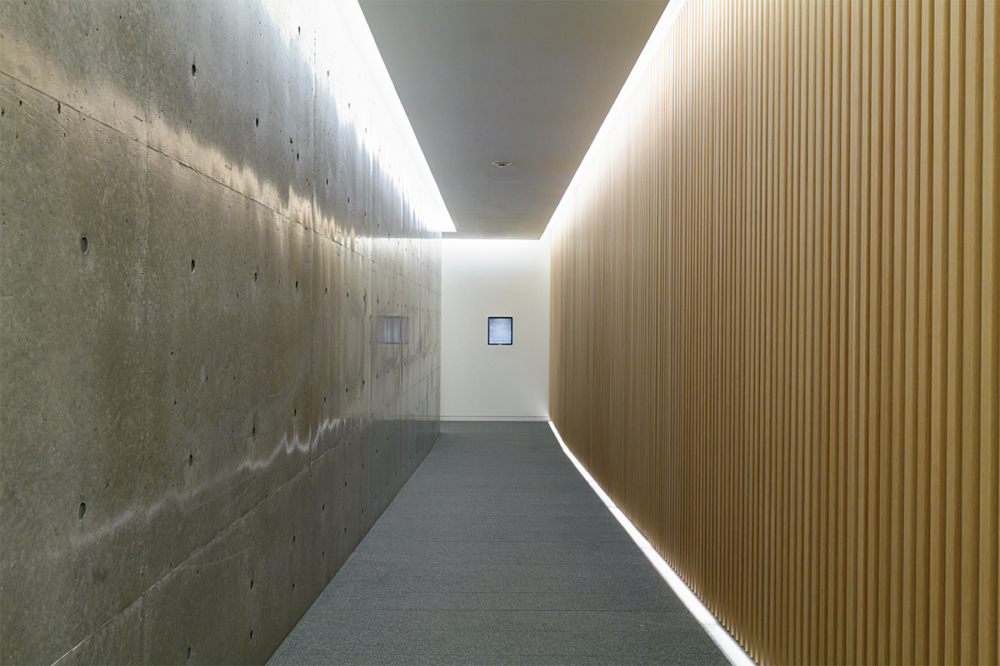
Коридор выводит в светлое лобби на берегу реки Сиракава. Половину его занимает стойка регистрации, где всегда дежурит куратор, который помогает гостям выбрать, чем заняться в городе. Другую половину, отделённую книжными стеллажами, отдали под гостиную, где можно выпить чаю и перекусить.
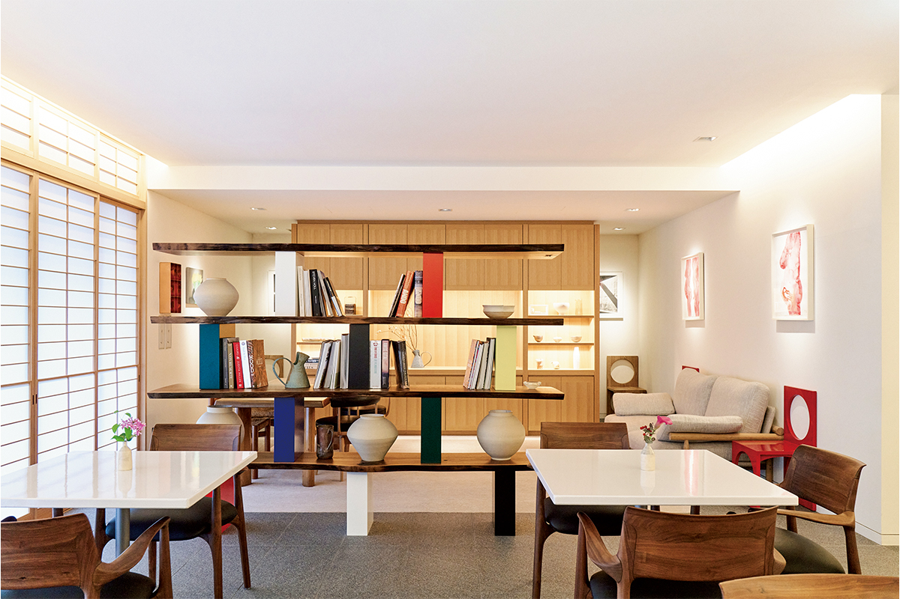
Владелец
Ирландец, который собирает искусство
Владелец THE SHINMONZEN ирландец Пэдди Маккиллен. Он хорошо разбирается в искусстве и уверен, что оно помогает гостям восстановить силы. Работы из его коллекции развешаны по всему отелю. Уже 15 лет Маккиллен владеет биодинамической винодельней Château La Coste в Провансе, а в 2017 году открыл рядом отель высшего класса Villa La Coste на участке около 2,4 квадратного километра, и тот собрал немало международных наград. THE SHINMONZEN стал первым отелем его частной коллекции в Японии.
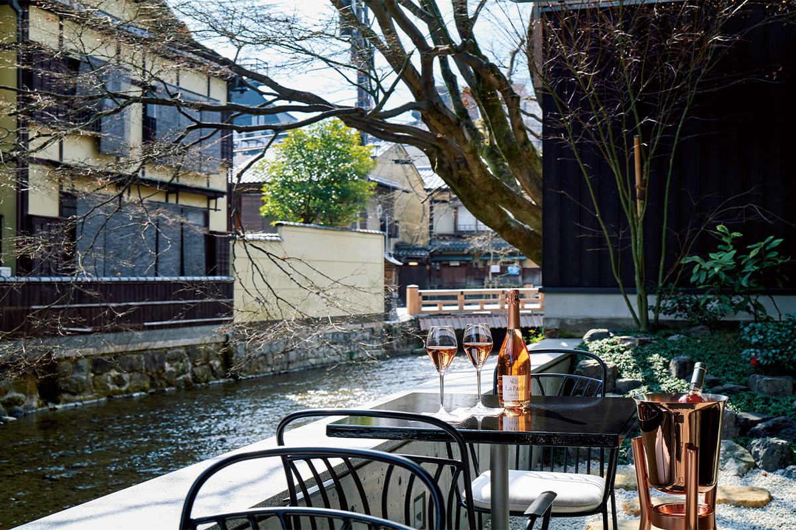
Здание проектировал Тадао Андо, друг владельца. Интерьеры простые и элегантные, а дорогие материалы и мебель напоминают маленькие отели юга Франции.
Место выбрано не случайно. На улицу Симмондзэн когда-то приезжали знаменитости и крупные коллекционеры со всего мира, очарованные японским искусством и антиквариатом. Маккиллен решил поставить свой отель именно на этой улице с долгой историей, и так появился отель, где встречаются культуры Востока и Запада.
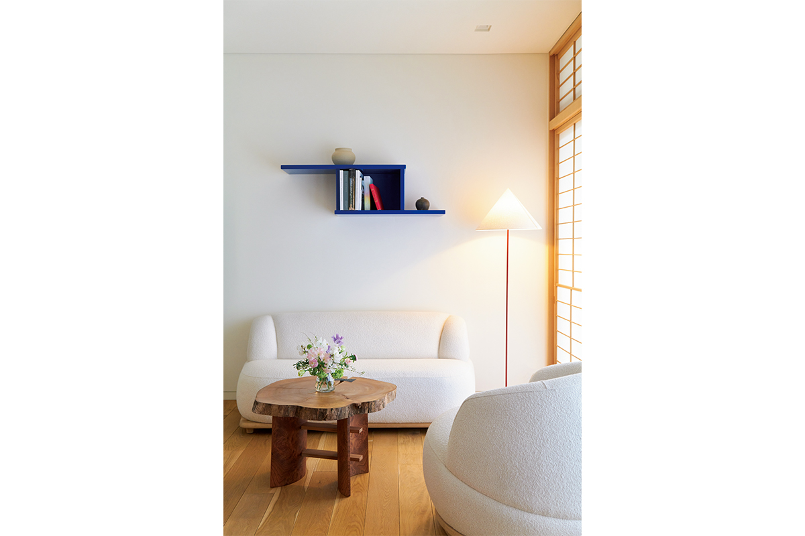
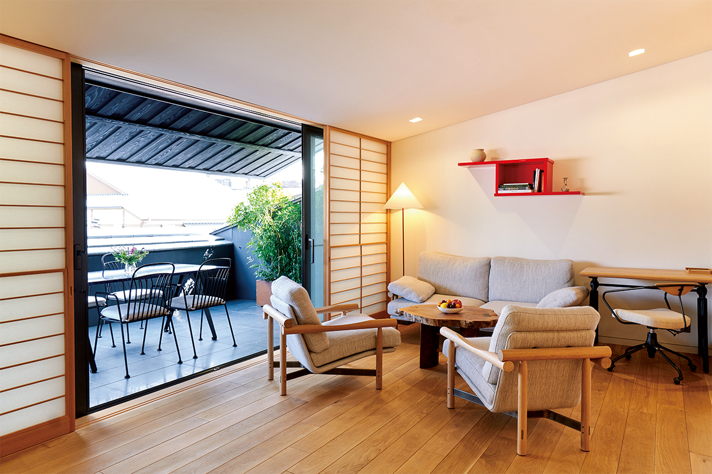
Прогулка
Улица семидесяти антикваров
Улица Симмондзэн ведёт к воротам храма Тион-ин, главного храма буддийской школы Дзёдо. На западе она начинается от улицы Кавабата, на востоке доходит до улицы Хигасиодзи, и на этих 500 метрах собралось около 70 антикварных лавок.
Поэтому одна из программ отеля это прогулка по антикварам с куратором. В тот день куратор первым делом привёл нас в старую лавку «Кадзи Кобидзюцу». Хозяин лавки в седьмом поколении много работает за границей, и мы заслушались его рассказом о том, как после Всемирной выставки в Осаке 1970 года улица Симмондзэн стала открываться иностранцам и как складывалась здесь торговля антиквариатом.
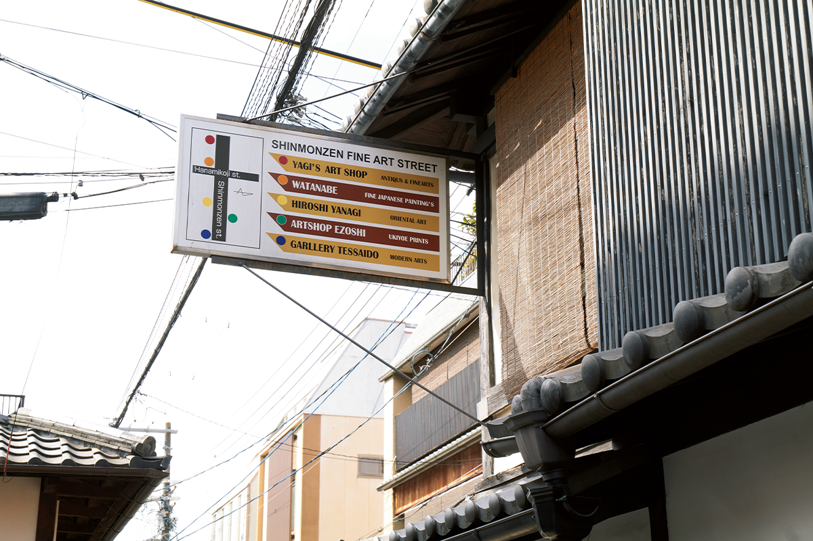
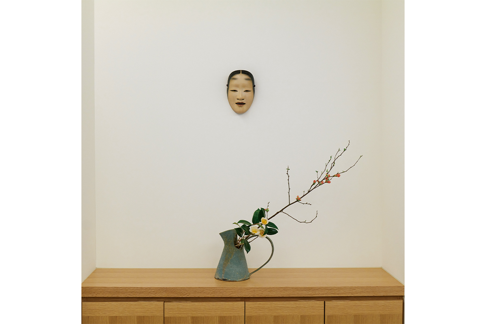
Во вторую лавку, «Тэссайдо», куратор вёл нас с особым воодушевлением. В полутёмном стильном зале новой лавки стоит старинная посуда, которую хозяин выбирает сам и с безупречным вкусом. Он так увлечённо рассказывал, например, почему в Киото оказалось столько старинного фарфора имари, что мы забыли о времени. Даже то, как здесь подают чай и сладости, говорит о его чувстве красоты.
Номера
Кипарис, мрамор и река под окном
THE SHINMONZEN старается бережно относиться к природе. В Японии издавна верили, что божество живёт даже в бамбуке, лаке, шёлке и камне, и жизнь рядом с природой была здесь обычным делом. Природные материалы отель использует повсюду: ванны из благоуханного кипариса хиноки, мраморные раковины, номер TATAMI ROOM с татами лучшего качества, мягкий свет сквозь бумажные сёдзи. Из каждого номера видна река Сиракава, и одно это напоминает, как хорошо оказаться в Киото.
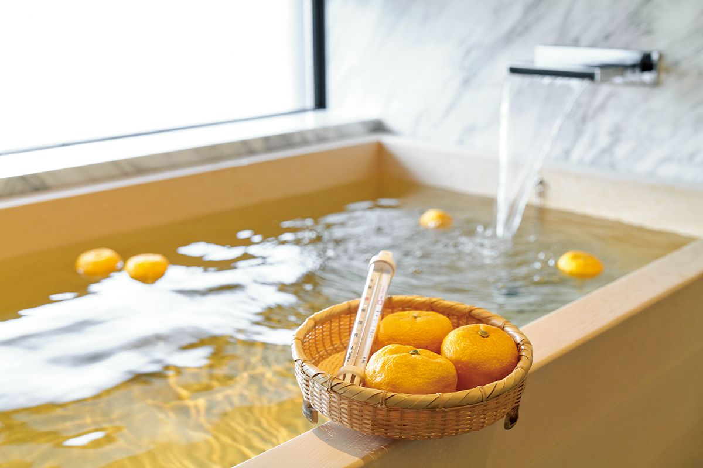
Главное в отеле это союз двух людей: владельца, который его задумал, и Тадао Андо, который воплотил его замысел. Их вкусы дополнили друг друга, и получился простой, современный и роскошный отель, где японское и европейское живут рядом. Внимание к деталям видно и в номерах: в туалетных принадлежностях, сёдзи, коврах ручной работы.
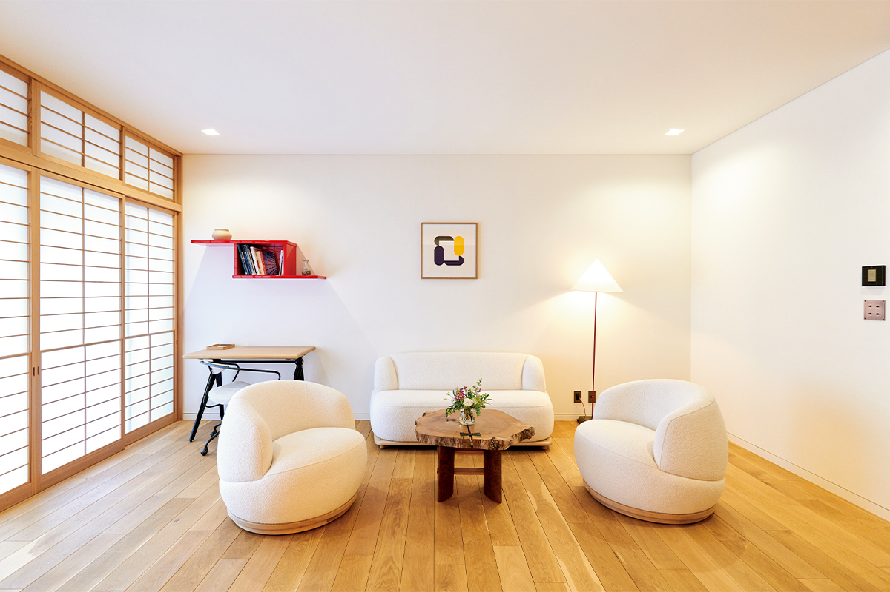
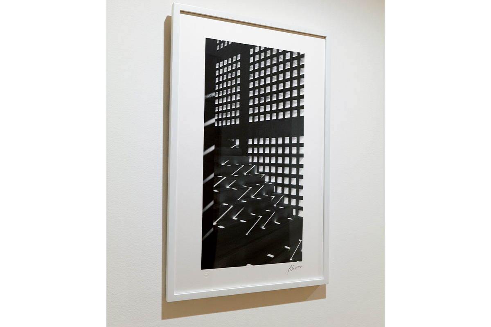
Еда
Ресторан Жан-Жоржа и бэнто соседей
На первом этаже должен был открыться ресторан знаменитого шефа Жан-Жоржа. Его открытие планировали на осень 2022 года, но из-за обстановки в мире оно отодвинулось. Шеф-повар отеля, ученик Жан-Жоржа, тем временем ждал приезда учителя и готовился: он работает по принципу «с фермы на стол», каждый день ездит за свежими продуктами в Охару и знакомится с фермерами.
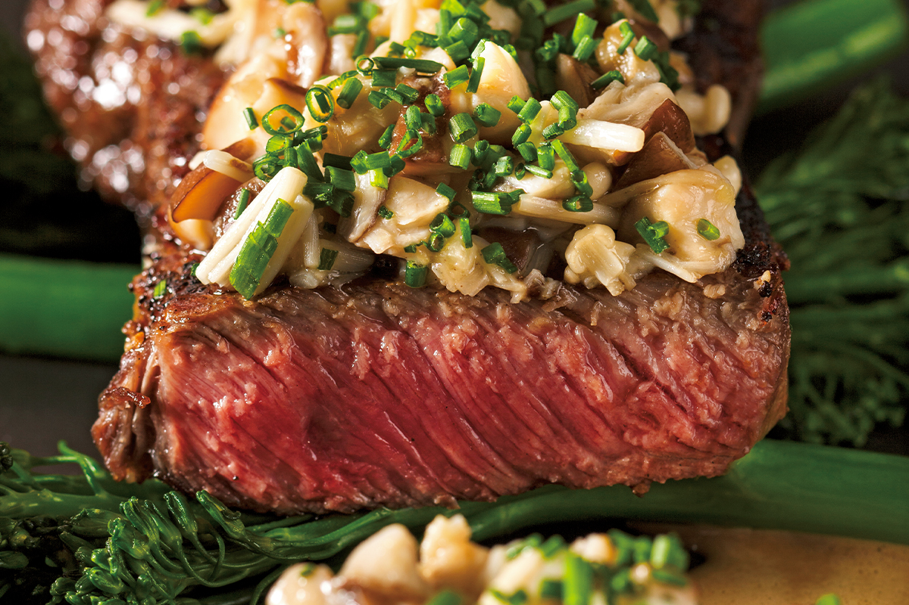
Ужин можно заказать и в номер. В двух шагах от отеля работает «Хисиива», дом готовой еды, основанный в 1830 году. Даже в Киото, где старых заведений много, его бэнто считаются особенными: в них уложены вкусы Киото каждого времени года. Есть бэнто в коробке «оридзумэ», в лаковой коробке-полумесяце «хангэцу» и в коробке с перегородками «сёкадо». Их делают ограниченно, и это классика киотской традиции готовой еды на заказ.
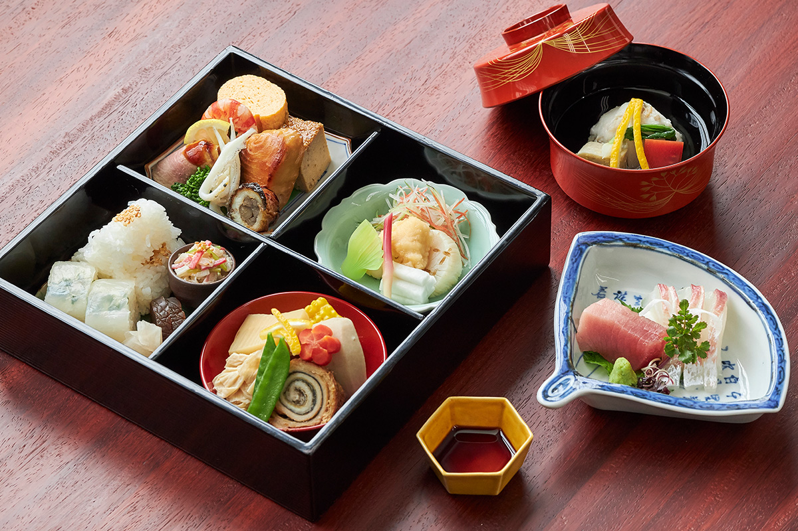
В номер можно заказать и сеанс рэйки. Целительница, учившаяся в Новой Зеландии и США, говорит, что лечит и людей, и животных. Она принимает энергию космоса и передаёт её человеку, снимает усталость и застой в теле. Свои мягкие прикосновения она называет «солнечными», и многие гости засыпают прямо во время сеанса.
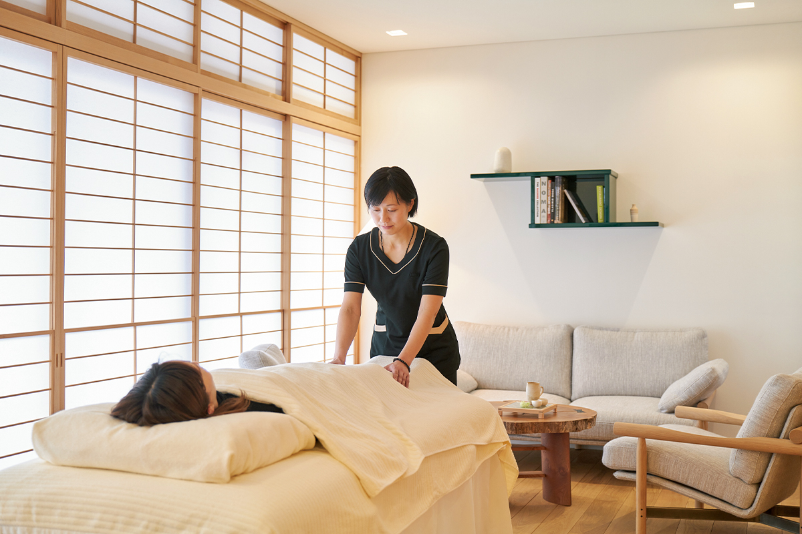
THE SHINMONZEN
- Адрес
- префектура Киото, Киото, район Хигасияма, улица Симмондзэн, Ниси-но-тё, 235
- Телефон
- +81 75-533-6553
- Номера
- 9
- Цены / Вход
- от 130 000 иен за ночь с завтраком, с налогом и сервисным сбором, трансфер от вокзала Киото включён (2022)
- Заезд / выезд
- 15:00 / 11:00
- Как добраться
- около 18 минут на машине от вокзала Киото, 7 минут пешком от станции Сандзё городского метро
«Хисиива»
- Адрес
- префектура Киото, Киото, район Хигасияма, улица Симмондзэн, Ниси-но-тё, 213
Фото: Марико Тая.